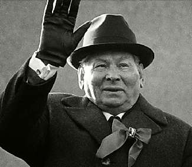

Борис Акунин
Мой календарь
13 февраля 1984 года я впал в грех уныния. Мне было всего 27 лет, а я ощутил себя заживо похороненным.
В тот день новым правителем страны, в которой я жил, назначили живого покойника Константина Устиновича Черненко. После живого покойника Андропова и живого покойника Брежнева это был уже третий кадавр, от которого целиком и полностью зависела жизнь 260 миллионов советских людей, в том числе моя.
И я понял, что этот макаберный круг никогда не закончится. Они меня переживут. Я состарюсь и умру, запертый в колбе размером в одну шестую планеты, и держать эту колбу в руках будет нескончаемая череда кремлевских старцев, каждый следующий маразматичнее предыдущего. Ну я и впал в уныние, а что мне еще оставалось?
Но пройдет совсем немного времени, и колба треснет, разлетится на куски.
Поэтому впадать в уныние, даже когда всё кажется безнадежным, - смертный грех. Только сам себя иссушаешь.
Сегодня - очень правильный день напомнить себе о том, что рефлексировать в мрачной ситуации не всегда полезно. Иногда нужно просто пожать плечами и сказать себе: бог не выдаст, свинья не съест.
И прочитать стишок Козьмы Пруткова: